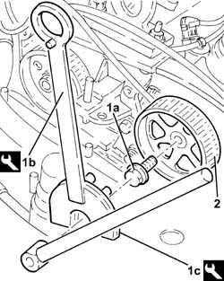
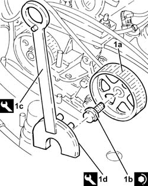

1032B61 timing belt pulley - r r
- Path
- Procedures > 10 ENGINE > 1032 TIMING SYSTEM > 1032B BELT TIMING SYSTEM > 1032B61 timing belt pulley - r r
- Kind
- repair procedure (removal / refitting; the operation number is the code)
- Applies to
- all engines; all production periods
- Interactive page
- https://sloeber94.github.io/elrnDB-fDbl/en/#/2584482
Applies to: all engines; all production periods
 Removing
Removing
 Refitting
Refitting1. Undo the bolt (1a) of the driven pulley using the tools (1b) for counter-torque.
 | Name | Country |
|---|---|---|
1b | Support for counter-torque | 1.860.831.000 |
| Name | Country |
|---|---|---|
1c | Counter-torque | 1.860.831.001 |
2. Remove the driven pulley.

Applies to: all engines; all production periods
Refitting
Removing1. Refit toothed driven pulley (1a) in its seat and secure by tightening bolt (1b) to the specified torque using tools (1c) and (1d) for counter-torque.
 | Fastening | Component | Ø | Value (daNm) |
|---|---|---|---|---|
1b | Bolt | TIMING DUCT PULLEY | M12 | (Camshaft side) 10.8 ÷ 13.2 |
| Name | Country |
|---|---|---|
1c | Support for counter-torque | 1.860.831.000 |
| Name | Country |
|---|---|---|
1d | Counter-torque | 1.860.831.001 |
